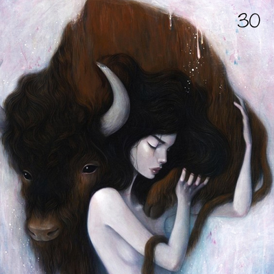

Interactive record. Each ring of grooves is a song. Press Enter to focus it and Escape to leave. Use the arrow keys to move between songs, and Enter to play one.
Tracklist
Running order
21 songs
Take it home
The inlay card
Print it, cut it out, and fold it into a cassette case. You can also copy the tracklist and rebuild the mix wherever you listen.
Side A
- So Many Details Toro y Moi
- Fires and French Horns Halina Larsson
- Five Seconds Twin Shadow
- Sunshine in Chicago Sun Kil Moon
- Fragile Soul Heavy Heart Dust Covered Carpet
- Blue Monday (New World Order cover) Brythoniaid Male Voice Choir
- Heartbeat Mike Landry
- Le Temps De L'amour Françoise Hardy
- Heavy Ceiling Said The Whale
- Mind Control Friends
- Encyclopedia of Classic Takedowns A.C. Newman
Side B
- @deathgripz Death Grips
- Bedroom Honesty Lace Curtains
- Night Light (Wild Beasts remix) Jessie Ware
- Don’t Tell Me Empress Of
- Stay Small Nicole Miglis
- Track 2 (feat. Inga Copeland) Dean Blunt
- Don’t Talk Down The Stills
- Wrath of God Crystal Castles
- Islands (The xx cover) Atlas Genius
- Rivers Black City Lights
Thirtieth
No.030
Thirtieth
October 2012
Monday Music Mix
A / B · 21 songs
Notes
From the original post
Happy birthday, L (it’s still your birthday in some time zone).
Album art featuring work by Stella Im Hultberg
Archive